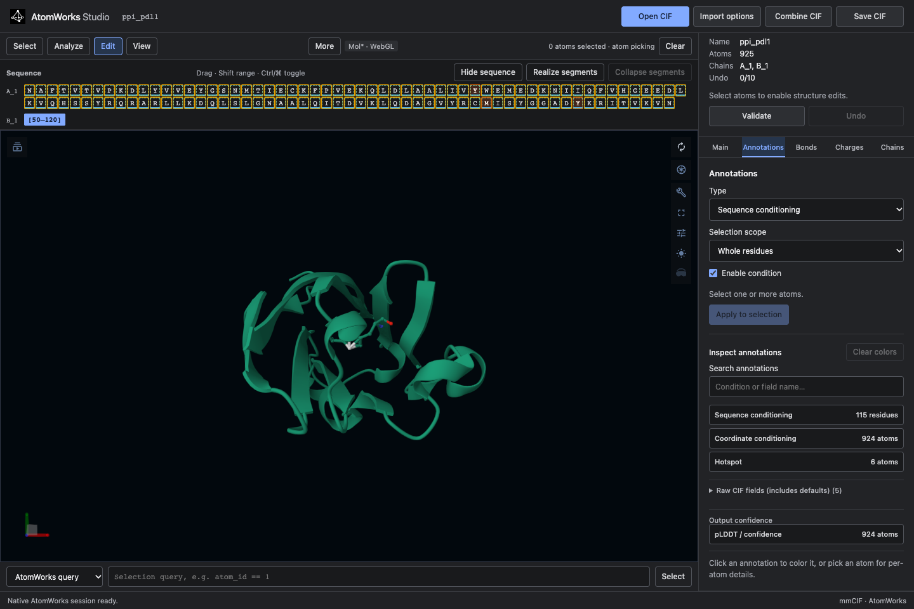
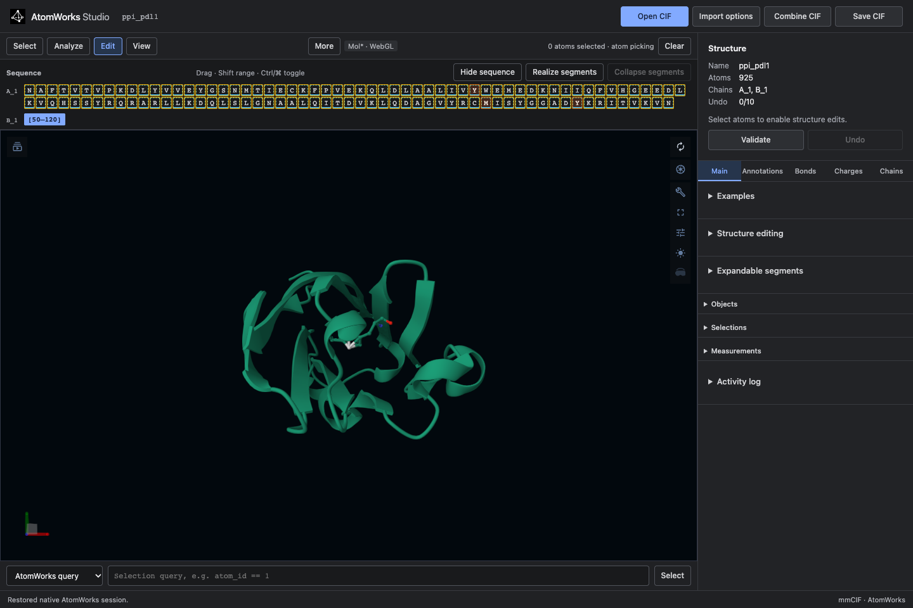

Browser guide¶
The browser editor runs locally or on a shared server. The Studio API stores the annotated structure; Mol* or Patinae renders it.

Start the editor¶
With installed wheels, run atomworks-studio. See installation.
From a source checkout:
make bootstrap
make run
Open http://127.0.0.1:8000/. It uses Mol/WebGL by default*, including when embedded in Gradio. Choose Patinae from Backend → Renderer, or pin a renderer with a query parameter:
http://127.0.0.1:8000/?viewer=patinae — Patinae using WebGPU
http://127.0.0.1:8000/?viewer=molstar — Mol* using WebGL
Patinae and Mol* implement the same Studio actions. An explicit renderer choice is retained for later visits. A fatal Patinae runtime failure still switches to Mol* to preserve the open document.
The editor stays visible beside the molecule, or below it in narrow windows. Viewer menus and Escape do not hide it. Backend contains the renderer selector; the command catalog appears there only when the renderer supports it.
Load a structure¶
Main → Structure → Reset conditions to defaults resets all conditions on the loaded structure, including saved targets and restraints. Atoms, coordinates, bonds, chains, and structural edits stay in place. Selection, condition colors, and temporary display changes are cleared. Undo restores the conditions.
Reloading the page restores your current editing session. To start over, reopen the original CIF with Open CIF, or load the example again from Main → Examples. Main → Structure → Close structure deletes the active server session and its saved snapshot, then returns to an empty editor. Reloading or following an old session link cannot reopen it. Your original CIF file is unchanged. Save CIF first to keep your edits. If closing fails, the document stays open with an error.
Choose Open CIF and select a .cif or .mmcif file. Import options
controls:
Preset — annotated CIF or RCSB preparation
Assembly — one assembly, the first assembly, all assemblies, or asymmetric unit
Model — one model or all models
Hydrogens — keep or remove
Remove waters — optional water filtering
Use Combine CIF to merge another file into the active document. The Main → Examples panel includes a Protein binder · PD-L1 example and the eight NIM inputs: antibody, VHH, enzyme, motif, SAM binder, inverse folding, partial diffusion, and unconditional design. The same packaged catalog is used by the Gradio Space.
The fixtures are described in examples/README.md.
To make the protein-binder input from an unannotated PD-L1 CIF, open the target
and use AtomWorks query chain_id == 'A' to select it. In Annotations,
enable Sequence, reselect chain A, then enable Coordinate. Mark these six target
atoms as Hotspot: residue 56 CG and OH, residue 115 CG and SD, and residue
123 CD2 and OH. Then use Main → Expandable segments to add a new
protein chain B with a 50–120 residue segment. Save the CIF. These are the
conditions in the packaged example; the same controls work in PyMOL.
Edit an annotated CIF¶
The inspector uses the same Main, Annotations, and Structure tabs as PyMOL. Structure contains Charges, Protonation, and Bonds, in that order. Main contains examples, structure edits, and expandable segments. Tab names and order come from the shared Python package. The browser and VS Code use the same UI code. Select atoms or residues, choose an operation, then apply it. Undo reverts the last document edit.
Conditions are stored in the CIF. A successful condition edit clears the selection, matching PyMOL; failed or cancelled edits keep it. Click a row under Conditions on this structure to color its atoms; click the same row again to restore the previous colors. Pick an atom to inspect its values. The clickable list shows active conditions without needing to search by name. Up to seven values use distinct annotation colors. With more values, choose one group to highlight from the selector; colors are never reused within that view. Condition colors never move the camera. Atom-level conditions show temporary sticks for the affected residues, with the conditioned atoms colored. Switching conditions or clearing colors removes those temporary sticks; atoms without coordinates remain in the document and are not rendered. The editor displays supported design conditions only. Raw fields, stored defaults, and B-factors/confidence are preserved in the document but not listed as conditions. N- and C-terminus fields and the internal-coordinate payload are also hidden. Use Coordinate Group to edit internal-coordinate membership; group 0 represents absolute coordinate conditioning, and positive groups preserve internal geometry. The bundled antibody keeps its heavy and light chains in separate internal groups 1 and 2, with HER2 in Absolute coordinates (group 0). H99–H109 is free for sequence and structure design. Value legends show names, atom counts, and their highlight colors. Unchecking Enable condition hides the value input while retaining its draft for re-enabling.

Protonate a structure¶
Open Edit → Charges, set the pH, and choose Protonate structure. The default is 7.4. This updates hydrogens and formal charges across the whole structure using AtomWorks 3’s experimental protonation API. It does not require a model runtime. Bonds and chemical identity must be present for meaningful assignment; unsupported geometry reports an error without changing the document.
Existing heavy-atom annotations are retained. AtomWorks may retain or replace existing hydrogens and adds their bonds. Missing coordinates and special chemical states follow AtomWorks’ rules; inspect the result before using it as model input. The selection is cleared because atom rows can move. Undo restores the previous structure, and Save CIF includes the protonated result.
Analyze a structure¶
Use Analyze to add distance, angle, or dihedral measurements and to inspect hydrogen bonds, hydrophobic contacts, pi interactions, salt bridges, halogen bonds, and metal coordination. Interaction results are selectable and render as overlays in either viewer. Results appear in Interactions, separately from measurements you create. The initial display shows up to 25 contacts; change Maximum visualized contacts and rerun the analysis to show more. Molstar draws contacts together as dashed lines, with distances on hover. π-stacking uses one representative atom-pair line per interacting residue pair; the full atom-pair results remain available in the Interactions list. Clear contacts removes the contact overlays and results while preserving your measurements.
Use Style for representations and coloring. Molstar provides native camera
controls, including Reset Zoom. With Patinae, use PyMOL commands such as
orient or zoom in the command bar.
Save and round-trip¶
Choose Save CIF to validate and export the authoritative AtomWorks document, including stored molecular annotations, bonds, and charges. Export rebuilds the CIF from that document; unrelated top-level categories and original text formatting are not retained. Keep the original file if you need that metadata.
The downloaded file can be opened in:
another Studio session
the PyMOL plugin
RFD4-Proteina as a native annotated-CIF input
Install as a PWA¶
Studio publishes a web app manifest and a shell-only service worker. On
localhost or an HTTPS deployment, use the browser’s Install app action to
open Studio as a standalone application. The service worker caches the
application shell but never caches API responses, sessions, CIFs, or model
results.
Generate in a Gradio deployment¶
A model deployment can add generation controls around this same editor. The standalone browser, VS Code and PyMOL installations do not load a model.
Open a CIF or choose a NIM example in Edit → Main → Examples. The example selects the matching task in the generation controls.
Edit the input and choose the recycling preset (Thinking), design count and seed. Sampling contains the backbone and latent noise controls.
Choose Generate design. Status appears above the editor while the model runs. A failed request leaves the input unchanged.
Use View to switch between Input and the generated designs. Each result is a separate editable Studio document.
Download CIF saves the original model output; Download all saves a ZIP. After editing a result, use the editor’s Save CIF to save those changes.
Generation uses the document currently shown, so select Input before repeating the original request. Export files before leaving the app; sessions and the generation queue are temporary. See integrations to host a model with Studio.
Use inside VS Code or Cursor¶
The extension embeds the same service and UI:

Install and configure it with the
VS Code/Cursor extension guide. Remote editor
sessions use VS Code’s external-URI forwarding; the server must allow
vscode-webview: in ANNOTATION_STUDIO_FRAME_ANCESTORS.
Troubleshooting¶
Blank or unsupported renderer — switch explicitly to Mol* if the browser lacks WebGPU, or to Patinae if WebGL is unavailable.
Embedded view refused — add the exact parent origin to
ANNOTATION_STUDIO_FRAME_ANCESTORS.
If Patinae stops while rendering, Studio switches to Mol* and keeps the open document, annotations and Undo history. This can occur with software WebGPU drivers. The renderer label and activity log show the switch.
Import presets¶
Import options default to Infer. A file without saved StandardAnnotations uses Unannotated input, the AtomWorks RCSB preparation preset that adds missing atoms. An annotated file with no missing heavy atoms uses Annotated CIF, preserving its saved annotations and atom list. Existing atom records with unresolved coordinates count as present; adding missing records does not predict their coordinates.
When a file has both saved StandardAnnotations and missing heavy atoms, Studio asks you to choose a preset or Custom before importing. AtomWorks cannot retain annotation indices while adding atoms (or converting MSE to MET). Choosing Unannotated input discards saved annotations; choosing Annotated CIF leaves missing atoms absent. Custom settings expose assembly, altloc, hydrogens, and the other parser options. Open and Combine share this flow.
Errors appear in a red banner above the workspace and remain visible until dismissed.
Index conditioning is on by default. Use Unindex selection to exempt selected residues, or Restore indexing to return them to the default. The conditions summary lists only Unindexed residues; an absent entry means all residues are indexed.
Coordinate Groups manages internal-coordinate conditioning. New group from selection and Add selection to group clear absolute targets on those atoms in the same undoable edit. Group 0 is managed automatically by Coordinate conditioning and is not an editable internal group. Removing internal membership leaves those atoms unconditioned.